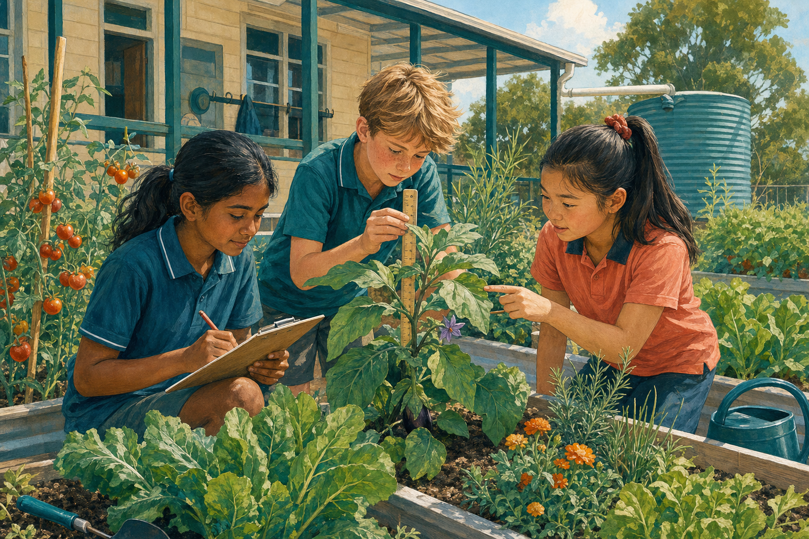

Picture lunchtime beside a sunny garden. Students taste a cherry tomato they helped grow, compare leaf shapes and share a watering can.
Learning takes root
a garden turns lessons into experiences students can see, touch and remember. Measuring seedlings makes mathematics meaningful; tracking insects brings science to life. Students could also practise patience, responsibility and practical teamwork. A 2023 synthesis examined , although results differed between programs.1 This does not guarantee success at every school. It does, however, give us a sound reason to begin carefully.
Healthy choices can grow
growing food could help students become curious about what they eat. An earlier systematic review reported promising signs that garden programs may influence nutrition knowledge and vegetable preferences, but warned that quantitative evidence was limited.2 That caution builds trust: Instead, our garden could support the Australian Government's call for schools to create environments that encourage healthy eating.3 Students would —three active steps towards informed choices.

Plan for every learner
some families may worry about cost, maintenance, allergies or wasted food. —and exactly why the garden must be planned, not planted and forgotten. A modest trial could use one raised bed, donated seedlings, safe tool routines and a roster shared by classes. Produce could be tasted only with family permission and allergy checks.
Start small. Learn deeply. Grow together.
the School Council should approve a one-bed, two-term kitchen-garden trial. Teachers could connect it to curriculum goals before reviewing its value and workload. It will not replace expert teaching or a balanced lunchbox. to learning that feels purposeful and shared.